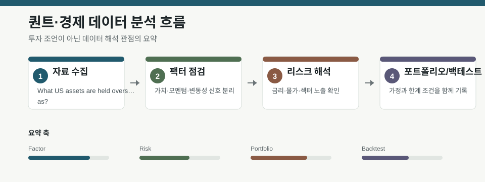

핵심 요약
- 결론: 세 자료 모두 “숫자 자체”보다 자산 배분 구조, 기준선 설정, 불확실성 가정이 해석의 핵심이라는 점을 보여줍니다.
- 원칙: 본문 수치는 원문 메타데이터만 기준으로 다루고, 미제공 수치나 성과 주장은 사실로 단정하지 않고 확인 항목으로 남겨야 합니다.
주목할 자료
| 번호 | 자료 | 출처 | 원문 | 핵심 내용 | 데이터 포인트 | 리스크/한계 |
|---|---|---|---|---|---|---|
| 1 | What US assets are held overseas? | FRED Blog | 원문 보기 | 해외 보유 미국 자산에서 국채가 차지하는 위치를 포트폴리오 관점으로 설명 | 해외 투자자 자산배분, 국채 비중, 포트폴리오 구성 | 메타데이터에 수치가 없어 비중 변화와 기간은 원문 그래프 확인 필요 |
| 2 | When Directional Accuracy Lies: A Base-Rate-Honest Benchmark for LoRA-Adapted TimesFM on Equity Forecasting | arXiv q-fin Statistical Finance | 원문 보기 | 방향 정확도만으로는 주가 예측 성능을 판단하기 어렵고, 기준선과 베이스레이트를 함께 봐야 함 | 방향 정확도, 베이스레이트, LoRA 적응형 시계열 모델, 백테스트 해석 | 80% 정확도 같은 수치는 맥락·샘플·비교군 확인 없이는 의미 축소 가능 |
| 3 | FEDS Paper: Demand Shocks and Endogenous Uncertainty | Federal Reserve Working Papers | 원문 보기 | 수요 충격이 기업 불확실성과 거시 활동에 어떻게 연결되는지 일반균형 모형으로 분석 | 기업 수준 불확실성, 수요 충격, 위험회피 기업, 신용조건 충격 | 모형 기반 결과라 가정·식별·파라미터 민감도 확인이 필요 |
자료별 상세
1. What US assets are held overseas?

- 핵심: 해외가 보유한 미국 자산을 넓은 포트폴리오 안에서 읽어야 하며, 국채는 그중 한 조각으로 봐야 합니다.
- 데이터 포인트: 해외 투자자의 미국 자산 배분에서 국채가 어떤 비중과 역할을 갖는지 확인하는 접근이 핵심입니다.
- 리스크: 메타데이터만으로는 자산군별 비중, 시계열 변화, 지역별 차이를 확정할 수 없습니다.
- 투자전략 반영 예시: 자산배분 점검표에 “해외 보유분 내 안전자산·달러자산 집중도”를 넣는 방식으로 활용할 수 있습니다.
- 실행 예시: 해외보유 미국자산을 국채, 주식, 기타로 나눠 기간별 비중 변화를 재현하고, 특정 구간의 쏠림이 리밸런싱 규칙에 어떻게 반영되는지 점검합니다.
2. When Directional Accuracy Lies: A Base-Rate-Honest Benchmark for LoRA-Adapted TimesFM on Equity Forecasting

- 핵심: 방향 정확도는 시장 예측의 충분조건이 아니며, 클래스 불균형과 베이스레이트를 함께 봐야 합니다.
- 데이터 포인트: LoRA 적응형 TimesFM의 성과를 평가할 때, 정확도보다 기준선 대비 개선 여부와 백테스트 설계가 중요합니다.
- 리스크: 초반 80% 수준의 정확도 주장도 표본 편향, 구간 선택, 거래비용 미반영 여부를 반드시 확인해야 합니다.
- 투자전략 반영 예시: 모델 성능표에 정확도 외에 베이스레이트, 혼동행렬, 롱·숏별 오류율을 함께 넣는 방식이 유용합니다.
- 실행 예시: 랜덤 기준선과 단순 추세 기준선을 함께 둔 뒤, 구간별 방향 정확도와 수익률이 함께 개선되는지 비교 검증합니다.
3. FEDS Paper: Demand Shocks and Endogenous Uncertainty

- 핵심: 수요 충격은 단순한 실적 변동이 아니라 기업의 내생적 불확실성과 거시 경기 경로를 바꾸는 요인으로 해석됩니다.
- 데이터 포인트: 위험회피 기업, 비대칭 충격, 신용조건 변화가 결합된 일반균형 모형이라는 점이 포인트입니다.
- 리스크: 모형 결과는 식별 가정과 파라미터 설정에 민감할 수 있어, 실증 자료와의 정합성을 별도로 확인해야 합니다.
- 투자전략 반영 예시: 거시 포트폴리오 점검 시 수요 둔화 구간에서 불확실성 확대가 어떤 업종 민감도로 전이되는지 체크리스트에 넣을 수 있습니다.
- 실행 예시: 신용조건 악화와 수요 충격이 동시에 발생한 구간을 가정해, 업종별 변동성·이익추정치·리스크예산 변화를 사전 시뮬레이션합니다.
팩터·리스크·포트폴리오 관점
- 핵심: 세 자료의 공통점은 팩터 노출을 숫자 하나로 단순화하지 말고, 기준선·구조·제약조건까지 함께 봐야 한다는 점입니다.
- 검수: 메타데이터에 없는 비중, 정확도, 효과 크기는 사실로 단정하지 말고 원문 그래프와 표에서 재확인해야 합니다.
정리
- 결론: 해외 자산 배분, 예측 모델 평가, 거시 불확실성은 모두 “해석 기준”이 성과 못지않게 중요합니다.
- 다음 확인: 원문에서 자산 비중 그래프, 성능 비교 기준선, 모형 가정과 식별 전략을 각각 확인해야 합니다.